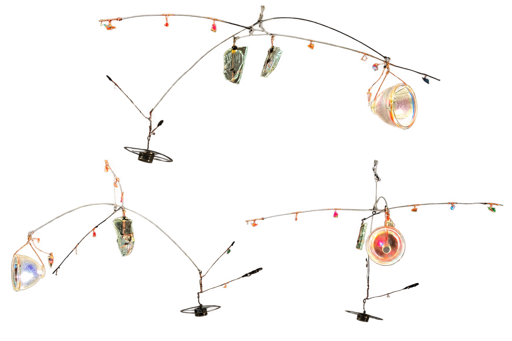
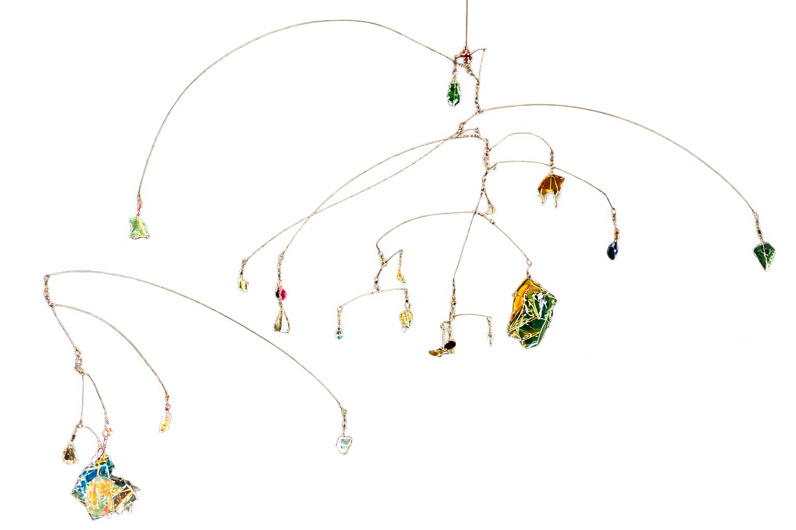
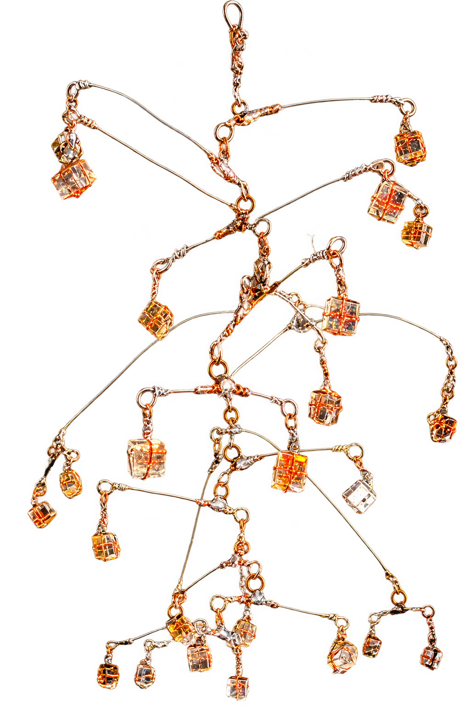
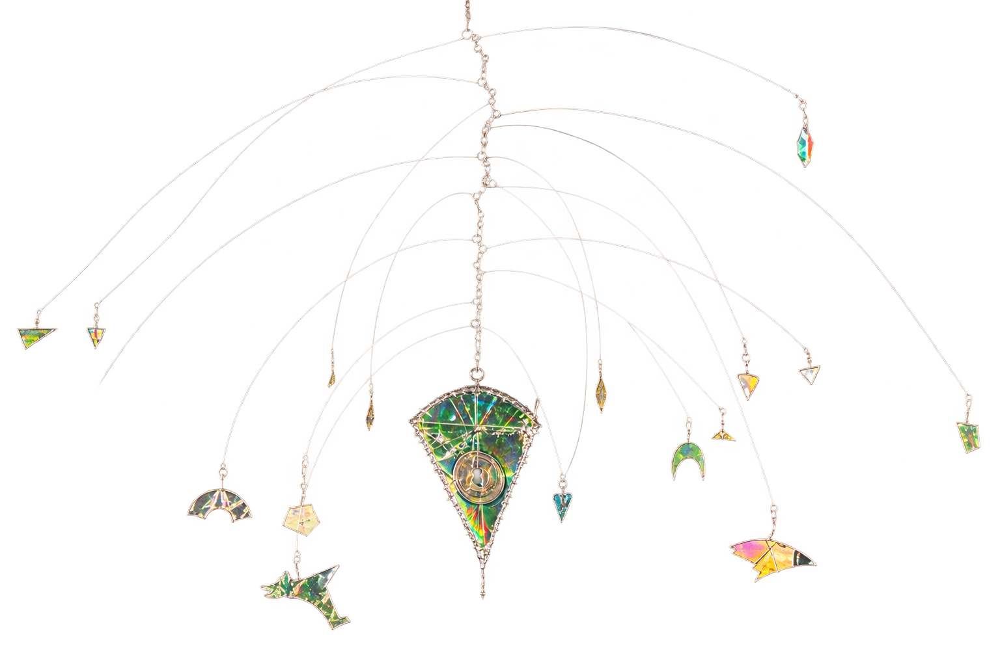

MANIPULATION
Source of energy
Self generated electricity is compared with externally supplied electricity.
ART AND EMPIRICAL AESTHETICS · PROPOSED EXPERIMENT
Can the feeling of having caused an artwork to come alive make its meaning more personal?
This is a planned participatory sculpture and controlled study. Visitors create the electricity that activates a mobile work made from reflective discarded materials. The experiment asks what changes when a person is the cause of the aesthetic event.
Read the study design ↓
THE QUESTION
Most sustainable messages ask people to imagine a consequence. Sustainable Reflecting makes a small consequence present. A visitor gives effort. Energy appears. Light moves through discarded material. The work becomes a situation in which action and outcome are linked.
THE EXPERIMENTAL IDEA
The installation is designed as a research environment. Its visible output remains the same. The visitor either generates the electricity themselves or sees the same output powered externally.
A mobile sculpture made from reflective discarded material is waiting in the space.
The visitor creates the electricity, or the work is activated by an external source.
Movement, light and duration are held as constant as possible across conditions.
A short prompt may invite attention to energy, materials and everyday choices.
PLANNED STUDY DESIGN
MANIPULATION
Self generated electricity is compared with externally supplied electricity.
SECOND FACTOR
A brief guided prompt is compared with an open encounter.
CONTROL
The sculpture, light, movement, sound and encounter time are kept comparable.
OUTCOMES
Perceived agency, personal relevance, aesthetic meaning, sustainability reflection and one defined behavioural choice.
The proposed design is a 2 × 2 study. It can begin as a pilot installation and be refined with a research partner before data collection.
WHY THIS IS WORTH TESTING
The study brings together work on embodied action, agency, empirical aesthetics and environmental psychology. It does not assume that participation is meaningful by itself. Instead, it asks whether a specific causal role changes the visitor’s experience.
Reflective waste is not a decorative metaphor here. The material directs light back into the room, while the visitor’s own effort makes that light possible. This creates a concrete link between resource, body and consequence.
Research context includes empirical aesthetics, agency research and sustainability related behaviour. A detailed proposal, measures and analysis plan are available for discussion.



INVITATION TO COLLABORATE
I am looking for partners in empirical aesthetics, cognitive psychology, environmental psychology and neuroscience. The next step is to refine the mechanism, build the energy system and host a pilot study.
Request the research proposal ↗